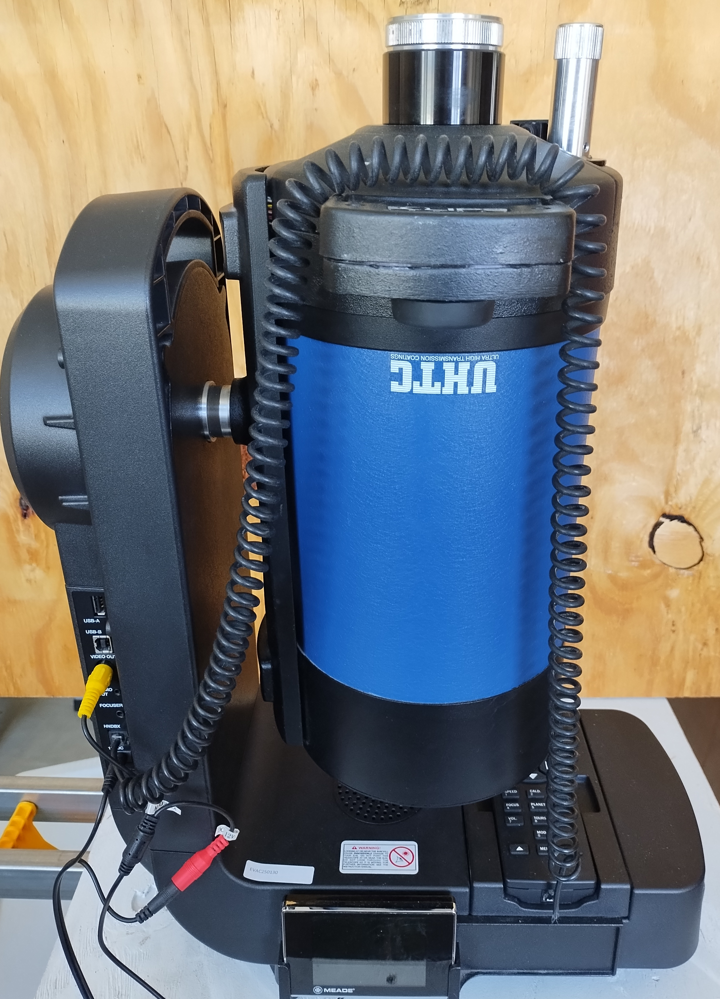
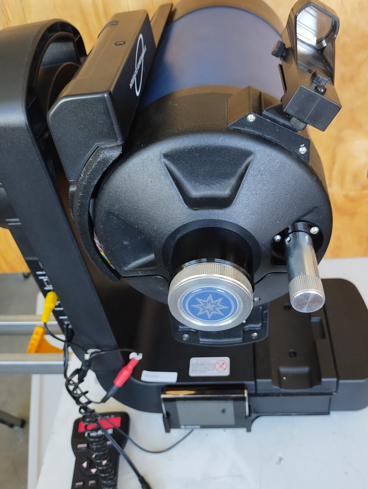
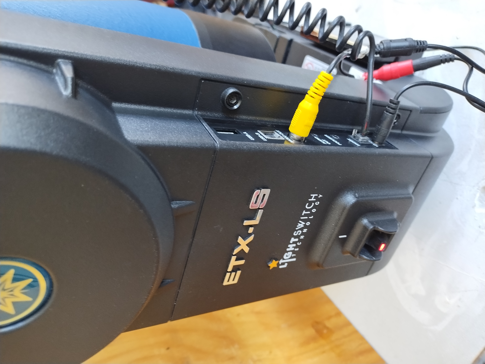
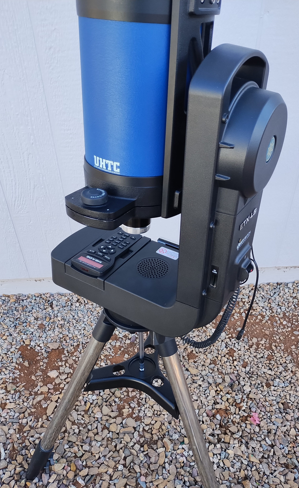

EVAC Used Equipment Sales
Meade ETX-LS ACF GPS telescope system
$650
6” f/10 (1524mm fl) Schmidt Cassegrain telescope
- Advanced Coma Free design
- Ultra High Transmission Coatings
- AutoStar III “go-to” with 100,000 object database
- “Astrometer inside” audio descriptions of objects
Includes these accessories:
- Autostar III hand controller
- Alt-Az Tripod fot ETX
- AC power supply
- “Red Dot” 1X finder
- Visual back for 1-1/4” accessories
- Meade star diagonal
- Meade 26 mm Super Plossl eyepiece
- Zhumell 18mm long eye relief eyepiece
- Zhumell 9mm long eye relief eyepiece
- Zhumell 5mm long eye relief eyepiece
- Case to hold accessories



